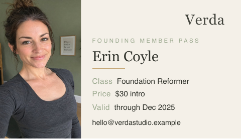

From Marit -- Our six instructors and what they teach (the names we actually use with clients): - Priya Anand -- Foundations - Dana Osei -- Flow - Lena Brandt -- Core & Restore
Verda Reformer Studio - Fitness campaign image system
Client brief
Verda's second-studio launch
We are opening a second reformer studio on Calloway Row. The launch should feel calm, welcoming and grounded in the room we actually have. The two room photographs are dusky; please improve them rather than replacing them with an invented studio.
We need three pieces. The 1440 x 2400 px launch-page composition should show our room using at least one of the two supplied photographs, identify the correct location, and present the classes we teach with their prices from roster_2027.csv and a clear booking action. Read the roster alongside owner_note.txt and follow the owner's corrections and permissions.
For the 1080 x 1350 px class announcement, pair the pictured instructor with their own class, price and validity from the roster. Give the instructor's full name as listed and place the cutout on solid Warm Off White or Sage.
The 1080 x 1920 px booking story should make the studio identity readable and keep the booking action inside the safe area specified below.
Use verda_logo_web.png on all three pieces, keeping its drawn letterforms rather than retyping them. The supplied drawing takes precedence over the written font description for the wordmark. Keep it on one line, no larger than 34 px on screen; on the launch page, place it above the headline as a separate lockup. Use the attached identity for the rest of the design and deliver the three named PNGs.
Brand identity
Verda Reformer Studio
Verda is a boutique reformer pilates studio built on calm. One body, one room, generous air, and unhurried attention. Marit and Dana have run a single studio for four years and are now opening a second on Calloway Row. The studio is deliberately the opposite of a chain gym: no crowding, no shouting, no gloss of the everyday. What clients pay for is space, focus and a considered environment they return to.
Audience
Considered buyers, mostly women in professional work, aged 28 to 48. They typically audition three studios before committing to one, and they are paying for calm, attention and space rather than volume or intensity.
Positioning
Premium neighborhood, not luxury. Intro pack 180 dollars, membership 220 a month. Positioned above a high volume budget gym and below wellness luxury: the tone is soft daylight and quiet confidence, never pretension and never a discount.
Palette
Sage
#9CA98F optionalThe one alternative ground: panels, buttons or the solid ground behind a cut-out portrait; and small labels on Warm Off White, as the field labels on passcard_2025_print.pdf. Never body text.Oak
#C7A97A optional accentHairline rules and dividers only, as the rule under the name on passcard_2025_print.pdf. Never a ground, panel, button or text.Warm Off White
#F4F0E8 mandatoryThe main ground, as on passcard_2025_print.pdf, and the ground behind a cut-out portrait; also type or the wordmark reversed out of Sage.Soft Ink
#33352E mandatoryHeadlines, body text, prices, fine print and the wordmark on Warm Off White, as the name, values and wordmark on passcard_2025_print.pdf. Never a ground, panel or button fill.Colour rules
- Distribution
- Grounds, panels and buttons are Warm Off White or Sage and nothing else, and a cut-out portrait sits on one of the two. On Warm Off White, headlines, body text, prices, fine print and the wordmark are Soft Ink, and only small labels may be Sage, as on passcard_2025_print.pdf. On Sage, all type and the wordmark are Soft Ink or Warm Off White. Oak is for hairline rules and dividers only, no more than 5% of the designed, non-photographic area.
- Opacity
- Every palette colour is used solid, at 100% opacity; no tint, transparency, gradient, shadow or blend mode; no scrim, gradient or overlay of any colour, black and white included, laid over a photograph. Type, the wordmark included, set beside or over a photograph sits on a solid Warm Off White or Sage panel, never directly on the photograph. Last year's pass, passcard_2025_print.pdf, sets its wordmark at 92%; on these exports the wordmark is solid Soft Ink or Warm Off White.
- Not allowed
- No colour outside the four palette hexes (#9CA98F, #C7A97A, #F4F0E8, #33352E) for type, the wordmark, panels, rules, buttons or icons. The orange skin and black rubber floor that owner_note.txt rejects are photographic prohibitions, set out under photography.
- Photography
- Photographs keep their own corrected colour and are never recoloured toward the palette. In verda_studio_frame_01.jpg and verda_studio_frame_02.jpg the reformer upholstery is brought to its own sage green and the floor to its own natural oak in one soft daylight, neither pushed to the Sage or Oak hexes. No skin reads orange and no photograph shows a black rubber floor, as owner_note.txt asks.
Typography
// Type system
Verda Reformer Studio
Room to breathe.
Aa
Monument Extended
Aa
Basis Grotesque
The samples show the hierarchy, not the licensed font outlines. Use the named fonts and settings below.
Apply these settings to newly typeset text, including headings, supporting copy and fine print. Do not change lettering already inside a photograph or rebuild a supplied logo to match a font. A style listed here does not ask you to add copy or a deliverable that the brief does not request. If a named font is unavailable, ask us before substituting it.
Sizes apply at the delivered canvas size, not the browser's zoom level. Tracking is in thousandths of an em: +20 means 0.020 em, not 20 pixels. Leading means the distance between text baselines. It applies only to multiline text. Where a point value is used on a digital canvas, 1 pt = 4/3 px; do not use the image's DPI metadata to change it.
01
Display / H1
One body, one room
Headline on studio-launch.png. Place verda_logo_web.png separately above it; the headline font settings do not alter the supplied logo.
02
Subheading / H2
A second studio on Calloway Row
Headline on class-feed.png and booking-story.png; also the secondary-heading style if needed on studio-launch.png.
03
Body
Unhurried attention, generous air, and space you return to.
Speaks to one person, not a crowd.
04
Fine print
Class times and prices available on request.
Class times and prices. Use Medium, not the Regular weight used for running copy.
- The launch-page headline is 88 px / 104 px. Feed and story headlines are 56 px / 68 px. The body and fine-print settings apply to all three PNGs.
- Use verda_logo_web.png as supplied. Do not retype it, change its letter spacing or stack it on two lines.
- The placed wordmark is no more than 34 px tall at the delivered size. No pass card is requested in this commission.
- Class times and prices are Basis Grotesque Medium; other running copy is Basis Grotesque Regular.
Voice
Plain, warm and unhurried. Speaks to one person rather than a crowd. Confident without hype, and honest about what the room actually is.
Existing brand materials
The original wordmark survives only as a small web export; no editable master was supplied. Keep that drawing rather than retyping it. The current colour and typography guidance is provided in this brief, alongside the room photographs and the earlier pass card.
Source assets (12)

passcard_2025_print.pdf
PDF · Source · 246.0 KB
instructor,class_code,price,validity,contact,portrait_file Priya Anand,RF-FND,$34,through Dec 2027,priya@verdastudio.example,verda_instructor_01.png Dana Osei,RF-FLW,$36,through Dec 2027,dana@verdastudio.example,verda_instructor_02.png Lena Brandt,RF-COR,$34,through Dec 2027,lena@verdastudio.example,verda_instructor_03.png Tomas Reyes,RF-ATH,$38,through Dec 2027,tomas@verdastudio.example,verda_instructor_04.png Yuki Sato,RF-PRE,$36,through Dec 2027,yuki@verdastudio.example,verda_instructor_05.pn


Requested deliverables (3)
Studio launch-page composition
Studio launch-page composition
studio-launch.pngPNG · 1440 x 2400 pxClass announcement
Class announcement
class-feed.pngPNG · 1080 x 1350 pxStudio booking story
Studio booking story
booking-story.pngPNG · 1080 x 1920 px · Keep the booking action inside these margins: top 250 px, bottom 320 px, left 60 px, right 60 px